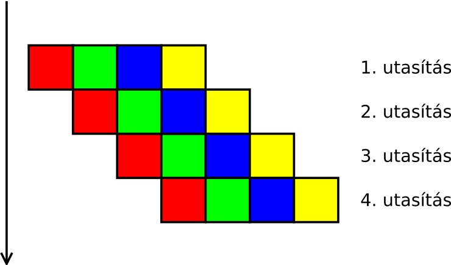

Számítógép architektúrák
A processzor számára egy utasítás feldolgozása több lépésből áll. Ezek közül a legfontosabbak a következők:
- Az utasítás beolvasása a memóriából.
- Az utasítás dekódolása: ez lényegében az utasítást végrehajtó áramköri rész kiválasztását jelenti.
- A művelet elvégzése (számítás).
- Az eredmény cél helyre írása.
Például egy összeadásnál a dekódolás a bitenkénti, kettes számrendszerbeli összeadó áramköri
rész aktiválását jelenti; a művelet elvégzése pedig azt, hogy megvárjuk, amíg az összeadást végző
kombinációs hálózat elvégzi a dolgát. Az egyes utasítások végrehajtása sorban történik, egymást
bevárják:

Arra a dologra jöttek rá a processzorok tervezői ezzel kapcsolatban, hogy bár az egyes utasítások részműveletei egymásra épülnek, de az egymás utáni utasításoknál, mint nagyobb egységeknél, ez nem feltétlenül van így. Például amíg a dekódolás és a számítás történik, addig a memóriának semmi dolga nincsen. A beolvasás és az eredmény írása alatt pedig a dekódoló és a műveletvégző áramköri részlet áll tétlenül. Ez a holt idő csökkenthető, ha futószalagon (vagy inkább csővezeték? az angol neve pipeline) próbáljuk feldolgozni az utasításokat: amíg az előző utasítás számítás részművelete történik, addig beolvashatjuk a következő utasítást a memóriából. Így mire az egyik utasítás befejeződik, a következő már dekódolva is lehet. Ehhez jó bonyolult áramkörök kellenek, de megoldható.
Mivel az utasítások elvégzése ilyenkor egymással átlapoltan történik, a processzor sokkal gyorsabb lehet. Láthatóan a fenti négy utasításhoz az eredeti felénél is kevesebb időre van szükség: 
A mai processzorokban ezt olyannyira tökélyre fejlesztették, hogy nem négy, hanem akár 10-20 apró lépésre is bontják az utasítások feldolgozását. Minél kisebbek a lépések, annál hatékonyabban lehet átlapolni a végrehajtásukat.
Gond csak egy esetben van: a feltételes ugró utasításoknál (ja – jump if above, jle – jump if less or equal stb.) Ezeknél ugyanis az utasításban tárolt művelet végrehajtásáig (a feltétel kiértékeléséig) nem lehet tudni, hogy melyik lesz a következő utasítás. Még a memóriacímét sem tudja megmondani a processzor: ha kiderül, hogy nem kell ugrani, akkor a következő címről, ha pedig ugrani kell, akkor valahonnan egészen máshonnan kell venni a következő utasítást jelző bájtot. Ilyenkor a futószalag megakad. Ez nem kevés időveszteséget jelent a négy lépésből álló futószalag esetében sem, hát még akkor, ha több elemből állna!
Mit lehet itt tenni? Hát, lehet például tippelni. Elkezdeni a következő utasítást végrehajtani, amelyik akkor jönne, ha nem kellene ugrani. Vagy azt, amelyik akkor jönne, ha kellene ugrani. Ha helyes volt a tipp, szerencsénk van: a futószalag nem akad meg. Ha helytelen, az sem nagy gond. A félig végrehajtott utasítás eredményét el kell dobni, és folytatni a programot a megfelelő helyen. (Például ha kiderül, hogy nem a kiválasztott összeadó utasítás jött volna, az összeadás eredményét nem kell visszaírni a memóriába.)
Ezt is csinálják a mai processzorok. Hogy mindez még hatékony is legyen, megpróbálják
kitalálni azt, hogy egy ugrás be fog-e következni (ugrás előrejelzés – branch prediction). Minél
nagyobb arányban sikerül ez, annál nagyobb a nyereség. A modern processzorok ugrás
előrejelzői 90% feletti találati aránnyal dolgoznak: a programkód vizsgálatával, és egy ciklusmag
párszori végrehajtása után szinte teljes biztonsággal előre tudják jelezni egy ugró utasítás
feldolgozásának már egy egészen korai fázisában, hogy be fog-e következni az ugrás, vagy nem.

Egy egyszerű előrejelző állapotgéppel is megvalósítható, minden ismert ugráshoz hozzárendelve a fenti állapotgépet. Ez annyira egyszerű, inkább egy számlálóként gondolhatunk rá: az értéke ugrásnál növekszik (legfeljebb 3-ig), nem ugrásnál csökken (legfeljebb 0-ig). Ha van egy ugrás a kódban, amely általában bekövetkezik, és csak ritkán nem, az állapotgép a kék állapotok körül fog tartozkodni; ha fordítva, akkor meg a sárgák körül lépked. A kékeknél ugrást jósol, a sárgáknál nem ugrást.
Ettől gyorsabb a program a rendezett tömbön.